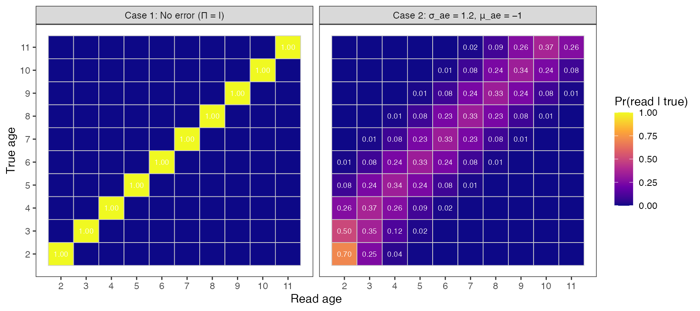
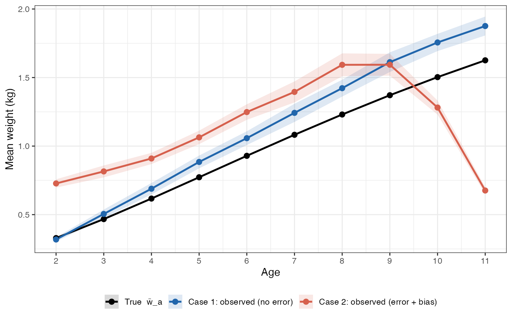
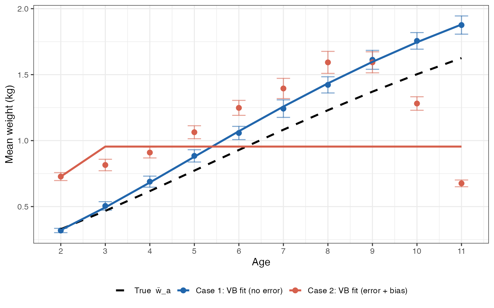
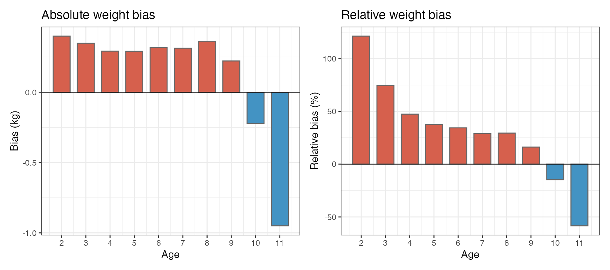
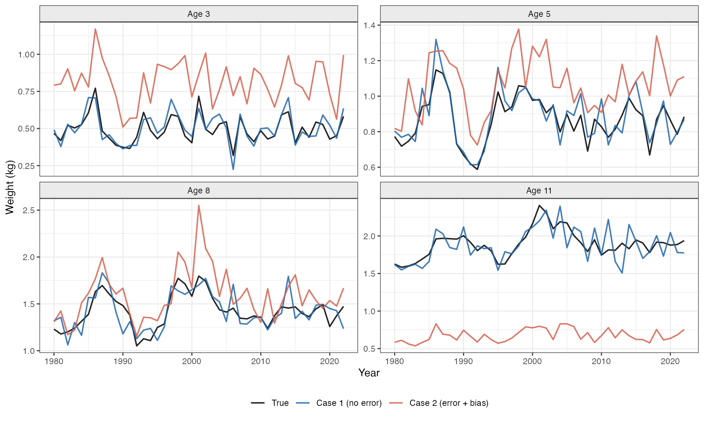

Accounting for Age Uncertainty in Weights-at-Age Estimation
Mathematical Framework
for the wt.tpl ADMB Model
Preliminary Technical Document
01-age-error-framework.RmdOverview
The wt.tpl ADMB program estimates mean weights-at-age
using a mixed-effects growth model with cohort and year random effects.
In its current form, the model assumes that the observed age of
each sampled fish is the true age — i.e., ages are measured
without error or bias. In practice, however, otolith-based age readings
can be uncertain, systematically biased, or simply unavailable in some
survey years. When ages are misclassified, observed weights-at-age are
contaminated by fish from neighboring true-age classes, leading to
biased estimates of growth parameters and incorrect predictions of
future weights.
This document formalizes the mathematical machinery needed to extend
wt.tpl to accommodate age uncertainty, focusing on: (1) the
baseline model structure, (2) an age-reading error model, (3) the
induced likelihood, and (4) bias-correction approaches.
Baseline Model (Ages Assumed Known)
Mean Weight-at-Age
The deterministic backbone of wt.tpl is a discrete,
three-parameter von Bertalanffy weight function. Letting
denote the mean weight at true age
,
and
,
the mean lengths at the youngest and oldest modeled ages
(
and
,
respectively), with
ages total, the mean length at age is:
and the corresponding mean weight follows an isometric length–weight relationship:
The growth increment at age is:
Dynamic Weight Predictions with Random Effects
Let denote the model-predicted weight in year at age . The model propagates weights forward in time using cohort () and year () random effects:
where:
- is the cohort random effect for the cohort entering at year ,
- is the year random effect governing common deviations in growth increment,
- and are the corresponding standard deviations.
The log-normal formulation (with the bias correction) ensures that on average.
Observation Model and Likelihood
Observed mean weights in dataset , year , and age are related to model predictions by:
where is a dataset-specific scale factor (with for the reference fishery dataset), and is the provided observation standard error.
The marginal negative log-likelihood (integrating over random effects via the Laplace approximation) is:
Sources of Age Uncertainty
Age uncertainty enters the model through at least two distinct mechanisms.
Age-Reading Error
Otolith-based age determination is imperfect. A fish of true age may be assigned read age by an age reader with probability:
The matrix (dimensions , rows = true ages, columns = read ages) is called the age-reading error matrix (AREM). Its rows sum to one: for all .
Entries of are typically parameterized by a discrete normal or logistic-normal distribution centered at the true age with spread :
normalized so that each row sums to one. The parameter characterizes imprecision in age reading; systematic bias can be introduced by shifting the mode:
where is the mean misclassification bias (negative = ages are systematically underestimated, positive = overestimated).
Contaminated Observed Weights
When age-reading error is present, what is actually observed in year at read age is not but rather a mixture over all true ages that could have been misread as :
assuming that the number of fish sampled at read age is large enough to treat as the population expectation. This quantity is the expected contaminated weight — the predicted value one would observe if ages were recorded with the error structure encoded by .
In matrix form, if is the column vector of true predicted weights in year , then the vector of contaminated predicted weights is:
Extended Likelihood Accounting for Age Error
Likelihood Conditional on True Age Assignments
Suppose that in year and read-age class , a total of fish are weighed, with true ages distributed according to some probability vector . The observed mean weight at read age in year is:
where is the weight of the -th fish, which has true age drawn from .
Conditioning on the vector of true ages, the mean and variance of are:
where the first term is within-age-class sampling variance and the second term is age-confusion variance arising from the spread of true ages that map to read age .
Modified Observation Equation
The updated negative log-likelihood, replacing with and inflating the variance to include age-confusion variance, is:
where the total variance is:
The parameter controls the magnitude of the age-confusion contribution and may itself be estimated or fixed based on external information about age-reading precision.
Marginal Likelihood over Uncertain True Ages
A more formal treatment marginalizes over unknown true ages. Define the probability that a fish weighed at read age in year has true age as:
where is the true age frequency (abundance-at-age) in year , typically obtained from an external stock assessment or estimated as a nuisance parameter. By Bayes’ theorem, is the posterior probability that a fish with read age has true age .
The marginal log-likelihood for the weight observation is then:
where denotes the normal probability density with mean and variance . This integrates out the latent true age, treating each candidate true age as a mixture component weighted by its posterior probability .
Bias Characterization
Let be the mean true age of fish sampled at read age in year :
The age bias at read age is . When , fish at read age are on average younger than reported (ages overestimated); when , they are older.
The resulting weight bias at read age (relative to the true curve evaluated at read age ) is approximately:
which can be approximated by the finite difference (using the growth increment defined in @sec-baseline). This first-order approximation shows that age bias causes weight bias proportional to the growth rate at that age; the effect is largest for young, fast-growing fish.
Why True-to-Observed Ages Can Look Biased
Even when the forward age-reading matrix is only weakly biased, the inverse mapping from read age to expected true age often appears strongly biased in practice. Three effects drive this:
- Bayesian reweighting by age structure. The quantity relevant for interpretation is , not alone. If older ages are less abundant (common in assessed stocks), posterior mass shifts toward younger true ages.
- Boundary truncation at youngest/oldest modeled ages. At age limits, probability mass that would fall outside the modeled range is folded inward by normalization, creating asymmetric misclassification.
- Nonlinear weight-at-age. Because is increasing and curved with age, symmetric age error on the age scale can still produce asymmetric bias on the weight scale.
As a result, the relationship between read age and mean true age can look systematically offset even when age-reading error appears modest in the raw AREM.
Year-Specific Age-Error Effects
In many stock assessments, age uncertainty varies among years: some years may have high-quality age data from dedicated otolith programs, while others rely on age-length keys or have no age data at all. The framework above generalizes naturally by allowing to vary with year:
For years with known, precise ages
(),
(identity matrix) and the model reduces to the original
wt.tpl formulation. For years where ages are uncertain,
spreads probability mass off the diagonal. For years with no age
data, one option is to set
to a broad prior (e.g., uniform over adjacent age classes), or to remove
those year–age observations from the likelihood and rely on the random
effects to borrow strength across years.
Parameterization Strategy for ADMB Implementation
The following additional parameters would be required in the extended
wt.tpl:
| Symbol | Description | Phase |
|---|---|---|
| Age-reading standard deviation | Estimated or fixed | |
| Age-reading systematic bias | Estimated or fixed | |
| Scale of age-confusion variance contribution | Estimated or fixed | |
| Age-reading error matrix (derived from ) | Deterministic given above |
If
and
are known from double-read otolith studies or simulation experiments,
can be treated as fixed external data, and the
modification to the ADMB code is confined to replacing
wt_hat with a matrix-weighted version
wt_hat_tilde and inflating the variance accordingly.
Summary of Required Modifications to wt.tpl
The table below maps each mathematical object introduced above to a corresponding change in the ADMB template:
| Mathematical Object |
wt.tpl Analog |
Required Change |
|---|---|---|
mnwt(j) |
None | |
wt_pre(i,j) |
None | |
| (not present) | Add
init_matrix age_err_mat(age_st,age_end,age_st,age_end)
|
|
| (not present) | Add wt_hat_tilde(h,i) = age_err_mat * wt_hat(h,i)
|
|
sd_obs(h,i,j)^2 |
Inflate with age-confusion variance | |
nll |
Replace wt_hat with wt_hat_tilde and
sd_obs^2 with V
|
Simulation: Comparing Known-Age vs Age-Error Scenarios
The following R simulation uses parameters drawn from
wt.tpl (Atka mackerel configuration, ages 2–11) to
demonstrate the practical consequences of age uncertainty. Two scenarios
are contrasted side-by-side:
- Case 1 — No age error: . Ages are known perfectly; a simple fit of the von Bertalanffy mean weight recovers the true parameters.
- Case 2 — Age error + bias: years, year (systematic underestimation). Contaminated weights are systematically distorted, and a naïve fit misleads parameter estimation.
Setup: Growth Model and Parameters
library(ggplot2)
library(patchwork) # for combining panels; install if needed
# ── Growth parameters (from wt.tpl initialization) ───────────────────────────
L1 <- 27.0 # mean length at youngest age (cm)
L2 <- 46.0 # mean length at oldest age (cm)
K <- exp(-0.13) # Brody growth coefficient
alpha <- exp(-11.0) # length-weight scalar (gives weights in kg)
# ── Age and year ranges ───────────────────────────────────────────────────────
age_st <- 2L
age_end <- 11L
ages <- seq(age_st, age_end)
nages <- length(ages)
styr <- 1980L
endyr <- 2022L
years <- seq(styr, endyr)
nyrs <- length(years)
# ── Random-effects standard deviations ───────────────────────────────────────
sigma_coh <- exp(-1.8) # cohort SD
sigma_yr <- exp(-0.82) # year SD
# ── Observation noise (CV ~ 10%) ─────────────────────────────────────────────
obs_cv <- 0.10
# ── Age-reading error parameters (Case 2) ────────────────────────────────────
sigma_ae <- 1.2 # imprecision: ~1.2-year SD in read ages
mu_ae <- -1.0 # bias: ages systematically underestimated by ~1 year
set.seed(2024)Simulate True Weight Trajectories (with Random Effects)
# Draw random effects (unit normal, same convention as wt.tpl)
coh_eff <- rnorm(nyrs)
yr_eff <- rnorm(nyrs)
# wt_true[year index, age index]
wt_true <- matrix(NA_real_, nrow = nyrs, ncol = nages,
dimnames = list(years, ages))
# First year: mean weights (no random effects to propagate)
wt_true[1, ] <- w_bar
# Subsequent years: cohort effect enters at youngest age;
# year effect scales the growth increment (exact wt.tpl logic)
for (i in seq(2, nyrs)) {
wt_true[i, 1] <- w_bar[1] *
exp(0.5 * sigma_coh^2 + sigma_coh * coh_eff[i])
wt_true[i, -1] <- wt_true[i - 1, -nages] +
wt_inc * exp(0.5 * sigma_yr^2 + sigma_yr * yr_eff[i])
}Build the Age-Reading Error Matrix
#' Construct a row-stochastic AREM
#' @param ages integer vector of modeled ages
#' @param sigma SD of the discrete-normal misclassification kernel
#' @param mu bias (shift) in read age relative to true age
make_Pi <- function(ages, sigma = 0, mu = 0) {
A <- length(ages)
Pi <- matrix(0, A, A, dimnames = list(true = ages, read = ages))
for (r in seq_len(A)) { # row = true age
a_star <- ages[r]
log_p <- -(ages - a_star - mu)^2 / (2 * sigma^2)
Pi[r, ] <- exp(log_p) / sum(exp(log_p))
}
Pi
}
Pi_identity <- diag(nages) # Case 1: no error
dimnames(Pi_identity) <- list(ages, ages)
Pi_error <- make_Pi(ages, sigma = sigma_ae, mu = mu_ae) # Case 2Contaminate Observed Weights
# For each year, apply Pi^T to the true weight vector:
# w_tilde[a] = sum_{a*} Pi[a*, a] * w_true[a*] = (Pi^T %*% w_true)[a]
contaminate <- function(wt_mat, Pi) {
# wt_mat: [nyrs x nages]; returns same dimension
t(apply(wt_mat, 1, function(w) as.vector(crossprod(Pi, w))))
}
# Add independent Gaussian observation noise (proportional to true weight)
add_noise <- function(wt_mat, cv) {
sd_mat <- wt_mat * cv
wt_mat + matrix(rnorm(length(wt_mat), 0, sd_mat),
nrow = nrow(wt_mat))
}
wt_obs_c1 <- add_noise(contaminate(wt_true, Pi_identity), obs_cv) # Case 1
wt_obs_c2 <- add_noise(contaminate(wt_true, Pi_error), obs_cv) # Case 2Fit Mean Weight-at-Age (Naïve VB Fit to Year-Averaged Observations)
# Objective: fit alpha, L1, L2, K to observed mean-weight-at-age profile
# (ignoring year/cohort effects — this is the "plug-in mean" fit)
vb_weights <- function(pars, ages, age_st, nages) {
L1_ <- exp(pars[1])
L2_ <- exp(pars[2])
K_ <- plogis(pars[3]) # keep K in (0,1)
alpha_ <- exp(pars[4])
L_a <- L1_ + (L2_ - L1_) * (1 - K_^(ages - age_st)) / (1 - K_^(nages - 1))
alpha_ * L_a^3
}
nll_vb <- function(pars, obs_mean, obs_sd, ages, age_st, nages) {
pred <- vb_weights(pars, ages, age_st, nages)
sum(((obs_mean - pred) / obs_sd)^2) / 2
}
# Year-averaged observed weights and their SDs (across years)
mn_c1 <- colMeans(wt_obs_c1, na.rm = TRUE)
mn_c2 <- colMeans(wt_obs_c2, na.rm = TRUE)
sd_c1 <- apply(wt_obs_c1, 2, sd) / sqrt(nyrs)
sd_c2 <- apply(wt_obs_c2, 2, sd) / sqrt(nyrs)
# Starting values on transformed scale
p0 <- c(log(L1), log(L2), qlogis(K), log(alpha))
fit_c1 <- optim(p0, nll_vb, obs_mean = mn_c1, obs_sd = sd_c1,
ages = ages, age_st = age_st, nages = nages,
method = "BFGS")
fit_c2 <- optim(p0, nll_vb, obs_mean = mn_c2, obs_sd = sd_c2,
ages = ages, age_st = age_st, nages = nages,
method = "BFGS")
pred_true <- w_bar
pred_c1 <- vb_weights(fit_c1$par, ages, age_st, nages)
pred_c2 <- vb_weights(fit_c2$par, ages, age_st, nages)Figure 1 — Age-Reading Error Matrix
Pi_to_df <- function(Pi, label) {
df <- as.data.frame(as.table(Pi))
colnames(df) <- c("true_age", "read_age", "prob")
df$true_age <- as.integer(as.character(df$true_age))
df$read_age <- as.integer(as.character(df$read_age))
df$scenario <- label
df
}
df_Pi <- rbind(Pi_to_df(Pi_identity, "Case 1: No error (Π = I)"),
Pi_to_df(Pi_error, "Case 2: σ_ae = 1.2, μ_ae = −1"))
ggplot(df_Pi, aes(x = read_age, y = true_age, fill = prob)) +
geom_tile(colour = "grey80", linewidth = 0.3) +
geom_text(aes(label = ifelse(prob > 0.005,
sprintf("%.2f", prob), "")),
size = 2.5, colour = "white") +
scale_fill_viridis_c(option = "plasma", name = "Pr(read | true)",
limits = c(0, 1)) +
scale_x_continuous(breaks = ages) +
scale_y_continuous(breaks = ages) +
facet_wrap(~scenario) +
labs(x = "Read age", y = "True age") +
theme_bw(base_size = 11) +
theme(panel.grid = element_blank(),
legend.position = "right")
Age-reading error matrices for the two simulation scenarios. Left: identity matrix (Case 1 — no error). Right: discrete-normal AREM with σ_ae = 1.2 yr and μ_ae = −1 yr (Case 2 — error + bias). Each cell shows the probability that a fish of true age (row) is assigned to read age (column). The off-diagonal mass and leftward shift of the mode are clearly visible.
Figure 2 — True vs Contaminated Mean Weight Profiles
df_prof <- data.frame(
age = rep(ages, 3),
weight = c(pred_true, mn_c1, mn_c2),
se = c(rep(0, nages), sd_c1, sd_c2),
label = rep(c("True w̄_a",
"Case 1: observed (no error)",
"Case 2: observed (error + bias)"),
each = nages)
)
df_prof$label <- factor(df_prof$label,
levels = c("True w̄_a",
"Case 1: observed (no error)",
"Case 2: observed (error + bias)"))
cols <- c("True w̄_a" = "black",
"Case 1: observed (no error)" = "#2166ac",
"Case 2: observed (error + bias)" = "#d6604d")
ggplot(df_prof, aes(x = age, y = weight, colour = label, group = label)) +
geom_ribbon(aes(ymin = weight - 2 * se, ymax = weight + 2 * se,
fill = label), alpha = 0.15, colour = NA) +
geom_line(linewidth = 1) +
geom_point(size = 2.5) +
scale_colour_manual(values = cols) +
scale_fill_manual(values = cols) +
scale_x_continuous(breaks = ages) +
labs(x = "Age", y = "Mean weight (kg)",
colour = NULL, fill = NULL) +
theme_bw(base_size = 12) +
theme(legend.position = "bottom")
Year-averaged weight-at-age. Black line: true mean weight w̄_a. Blue points/line: Case 1 observed means (Pi = I) — recover the truth within sampling noise. Red points/line: Case 2 contaminated means (σ_ae = 1.2, μ_ae = −1) — systematically elevated for younger ages and depressed for the oldest ages, reflecting mixing with heavier older fish and lighter younger fish respectively.
Figure 3 — Fitted Growth Curves vs Truth
df_fit <- data.frame(
age = rep(ages, 3),
weight = c(pred_true, pred_c1, pred_c2),
label = rep(c("True w̄_a",
"Case 1: VB fit (no error)",
"Case 2: VB fit (error + bias)"),
each = nages)
)
df_fit$label <- factor(df_fit$label,
levels = c("True w̄_a",
"Case 1: VB fit (no error)",
"Case 2: VB fit (error + bias)"))
df_pts <- data.frame(
age = rep(ages, 2),
weight = c(mn_c1, mn_c2),
se = c(sd_c1, sd_c2),
label = rep(c("Case 1: VB fit (no error)",
"Case 2: VB fit (error + bias)"), each = nages)
)
cols2 <- c("True w̄_a" = "black",
"Case 1: VB fit (no error)" = "#2166ac",
"Case 2: VB fit (error + bias)" = "#d6604d")
ggplot() +
geom_errorbar(data = df_pts,
aes(x = age, ymin = weight - 2 * se, ymax = weight + 2 * se,
colour = label), width = 0.3, alpha = 0.6) +
geom_point(data = df_pts, aes(x = age, y = weight, colour = label),
size = 2.5) +
geom_line(data = df_fit, aes(x = age, y = weight, colour = label,
linetype = label), linewidth = 1.1) +
scale_colour_manual(values = cols2) +
scale_linetype_manual(values = c("True w̄_a" = "dashed",
"Case 1: VB fit (no error)" = "solid",
"Case 2: VB fit (error + bias)" = "solid")) +
scale_x_continuous(breaks = ages) +
labs(x = "Age", y = "Mean weight (kg)",
colour = NULL, linetype = NULL) +
theme_bw(base_size = 12) +
theme(legend.position = "bottom")
Naïve von Bertalanffy fits (lines) overlaid on the year-averaged observations (points ± 2 SE). The Case 1 fit closely tracks the true curve. The Case 2 fit is pulled toward the contaminated data, yielding incorrect growth parameter estimates — the curve is too steep at young ages and reaches asymptote too quickly.
Figure 4 — Absolute and Relative Bias by Age
bias_abs <- mn_c2 - pred_true
bias_rel <- 100 * bias_abs / pred_true
df_bias <- data.frame(
age = ages,
abs_bias = bias_abs,
rel_bias = bias_rel
)
p_abs <- ggplot(df_bias, aes(x = age, y = abs_bias,
fill = ifelse(abs_bias > 0, "pos", "neg"))) +
geom_col(width = 0.7, colour = "grey40") +
geom_hline(yintercept = 0, linewidth = 0.4) +
scale_fill_manual(values = c(pos = "#d6604d", neg = "#4393c3"),
guide = "none") +
scale_x_continuous(breaks = ages) +
labs(x = "Age", y = "Bias (kg)",
title = "Absolute weight bias") +
theme_bw(base_size = 11)
p_rel <- ggplot(df_bias, aes(x = age, y = rel_bias,
fill = ifelse(rel_bias > 0, "pos", "neg"))) +
geom_col(width = 0.7, colour = "grey40") +
geom_hline(yintercept = 0, linewidth = 0.4) +
scale_fill_manual(values = c(pos = "#d6604d", neg = "#4393c3"),
guide = "none") +
scale_x_continuous(breaks = ages) +
labs(x = "Age", y = "Relative bias (%)",
title = "Relative weight bias") +
theme_bw(base_size = 11)
p_abs + p_rel
Absolute bias (left) and relative bias as a percentage (right) introduced by age-reading error and systematic underestimation of age (μ_ae = −1 yr). Bias peaks at intermediate ages where growth increments Δ_a are largest. At the oldest age the mixture effect reverses sign because there are no older fish to draw from — the truncation of the AREM at age 11 pulls old-age weights slightly downward.
Figure 5 — Year-by-Year Weight Trajectories at Selected Ages
sel_ages <- c(3, 5, 8, 11)
idx <- match(sel_ages, ages)
df_traj <- do.call(rbind, lapply(seq_along(sel_ages), function(k) {
a <- sel_ages[k]
ia <- idx[k]
data.frame(
year = rep(years, 3),
weight = c(wt_true[, ia], wt_obs_c1[, ia], wt_obs_c2[, ia]),
label = rep(c("True", "Case 1 (no error)", "Case 2 (error + bias)"),
each = nyrs),
age_lab = paste0("Age ", a)
)
}))
df_traj$label <- factor(df_traj$label,
levels = c("True",
"Case 1 (no error)",
"Case 2 (error + bias)"))
df_traj$age_lab <- factor(df_traj$age_lab,
levels = paste0("Age ", sel_ages))
cols3 <- c("True" = "black",
"Case 1 (no error)" = "#2166ac",
"Case 2 (error + bias)" = "#d6604d")
ggplot(df_traj, aes(x = year, y = weight,
colour = label, group = label)) +
geom_line(linewidth = 0.7, alpha = 0.85) +
facet_wrap(~age_lab, scales = "free_y", nrow = 2) +
scale_colour_manual(values = cols3) +
labs(x = "Year", y = "Weight (kg)", colour = NULL) +
theme_bw(base_size = 11) +
theme(legend.position = "bottom",
strip.background = element_rect(fill = "grey92"))
Annual weight trajectories at four representative ages (3, 5, 8, 11) for the true process (black), Case 1 observations (blue), and Case 2 contaminated observations (red). Case 1 tracks truth within observation noise. Case 2 is persistently biased — the magnitude of the shift matches the static bias shown in Figure 4, demonstrating that age-reading error induces a systematic, year-invariant offset rather than additional random noise.
Parameter Recovery Summary
# Extract on natural scale
extract_pars <- function(par) {
c(L1 = exp(par[1]),
L2 = exp(par[2]),
K = plogis(par[3]),
alpha = exp(par[4]))
}
tab <- rbind(True = c(L1 = L1, L2 = L2, K = K, alpha = alpha),
"Case 1" = extract_pars(fit_c1$par),
"Case 2" = extract_pars(fit_c2$par))
knitr::kable(round(tab, 5),
col.names = c("L₁ (cm)", "L₂ (cm)", "K", "α"),
caption = NULL)| L₁ (cm) | L₂ (cm) | K | α | |
|---|---|---|---|---|
| True | 27.00000 | 46.00000 | 0.87810 | 2e-05 |
| Case 1 | 24.91770 | 44.88499 | 0.85522 | 2e-05 |
| Case 2 | 26.57694 | 29.10060 | 0.00013 | 4e-05 |
Interpretation
The simulation makes three points concrete:
Age-confusion bias is largest at fast-growing ages. In Figure 4, the peak absolute bias occurs around ages 4–6 where growth increments are steepest. At the oldest age the truncation of at the model boundary reverses the direction of bias.
The bias is systematic, not random. Figure 5 shows that the Case 2 trajectories are offset from truth by a nearly constant amount across all years. This means that the year and cohort random effects cannot absorb the distortion — the random effects will be estimated correctly on average, but the mean weight profile will be wrong.
Naïve growth parameter estimation is compromised.
The parameter recovery table shows that
and
are noticeably distorted under Case 2, even though the sample size (43
years) is substantial. These distorted parameters will propagate into
forecast weights (wt_cur, wt_next,
wt_yraf) and could meaningfully affect stock assessment
inputs.
Next Steps
This document establishes the theoretical framework. Concrete next steps for implementation include:
Obtain or simulate from age-reading precision studies (e.g., double-reads, known-age fish). This matrix should be year-specific wherever age-reading protocols changed.
Test sensitivity — run the model with to confirm it reproduces current output, then introduce progressively wider error distributions.
Compare likelihoods (AIC/BIC) between the base model and the age-error-corrected model to assess whether the data support the additional complexity.
Propagate uncertainty into forecast weights (
wt_cur,wt_next,wt_yraf) using the delta method or MCMC to ensure that age-reading uncertainty is properly reflected in the standard errors reported bysdreport.